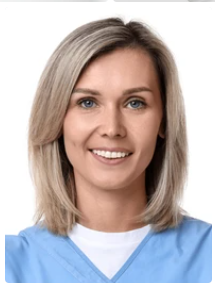

Médicos especialistas comprometidos con el bienestar y salud del Adulto Mayor. Contamos con un equipo de especialistas en los campos de la salud y tecnología para la mejora integral de la calidad de vida y longevidad del Adulto Mayor.
Ver masReúnete con un médico de forma virtual o presencial desde la comodidad de tu hogar.
Visítanos para una atención de calidad con la seguridad de contar con las medidas de protección personal.
Llegamos a tu domicilio para la toma de muestras.
Toma de exámenes médicos sin salir de casa.
Servicio de enfermería a domicilio y terapias de rehabilitación física.
